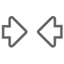
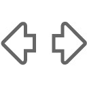

Today (Dashboard)¶
Today screen’s Global view¶
This screen allows the user to have an overview of the projects and tasks he is working on.
His projects, the tasks to which the user is assigned, those for which he is responsible as well as the various tasks created by himself or for which he is a requestor are listed in different sections.
Each list can therefore contain different types of tasks. The user can therefore view activities, questions, decisions, tickets, risks, meetings, milestones, … as well as financial elements, such as quotes, invoices or contracts.
It’s the User parameter “First page” by default. This parameter defines the screen that will be displayed first on each connection.
The definition of visibility is based on the access rights of each user
Parameters
Click on
 to access screen parameters.
to access screen parameters.
Dialog box - Today parameters¶
Allows to define sections displayed on the screen.
you can directly click on  at the top right of the section to close it
at the top right of the section to close it
To change the order of the blocks displayed, click and drag the blocks to the desired location.
Move a section¶
If the movement is authorized the header is green otherwise it is red.
Projects¶
This section allows you to view current projects on which you have visibility rights.
Several sections are available: the weather forecast of the projects, the elements that compose it and the progress of each.
The projects list is limited to the project visibility scope of the connected user.
The number of displayed projects can be defined in the global parameters.
Click on the name of a project will directly move to it.
Weather¶
The weather is entered manually on each project.
Projects Weather¶
Health status
This icon allows to display the health status of the project.
Quality level
A manual indicator can be set on project.
This icon allows to display the quality of the project.
Trend
Manual indicator can be set on project.
Trend indicators are displayed.
This icon allows to display the trend of the project.
Overall progress
Actual progress of the work of project and additional progress manually selected for the project
Elements concerned to project¶
Projects Elements¶
Numbers of elements concerned to a project are displayed.
Calculated and overall progress¶
Projects Progress¶
Actual progress of the work of project and additional progress manually selected for the project.
On mouse over the bar.
Calculated progress¶
On each project shows part of “to do” (red) compared to “done and closed” (green).
Progess
Real: LefProject progress based on actual resource working time.
Estimated: Progress of the project based on values set manually for an estimate.
Work
Validate: validate work on the project
Real: real work on the project
Left: remaining work on the project.
Other
Margin: the margin corresponds to the difference in work between the revised and the validated.
End date: Planified end date of the project.
Late: Number of late days in project.
Message¶
All scheduled messages will be displayed in this section.
Message section¶
Each point corresponds to a different message.
See also
To approve¶
You can define approvers for a document, incoming or outgoing mail.
Item to approve¶
Only users assigned to the project linked to the item to be approved can be added.
If you are in the list of approvers, you will see the list of items you need to approve.
The list of items is clickable.
See also
To do: Tasks list¶
The list of tasks is divided into 3 parts, click on the respective buttons to display the list:
Tasklist¶
the tasks for which I am responsible,
{kind=link}
the tasks assigned to me and finally
{kind=link}
the tasks of which I am the issuer or the requestor
{kind=link}
Note
Max items to display Parameter
Number of items listed here are limited to a value defined in Global parameters and User parameters
Enter the number of projects or tasks to appear on the screen.
What’s new: the activity Stream¶
You have access to the activity stream of the elements that you see displayed in accordance with the rights of your profile.
See also
Todo List¶
In this section you see the current todo lists on which you have rights
See also
Reports¶
You can select any report to be displayed on the Today screen.
Reports on today¶
Click on
 from the today screen window or in the screen parameters.
from the today screen window or in the screen parameters.Click on  to reduce the report display area to half the screen width.
Click on  to extend the report display area to the entire width of the screen.
{kind=link}
{kind=link}
Display parameters on today¶
Add selected report
To do this, just go to the selected report, select parameters and display result (to check it is what you wish on today screen).
Click on
 to insert this report with parameter on the Today screen.
to insert this report with parameter on the Today screen.Any unchanged parameter will be set as default value.
These reports will be displayed on Today screen like other pre-defined parts.
See also